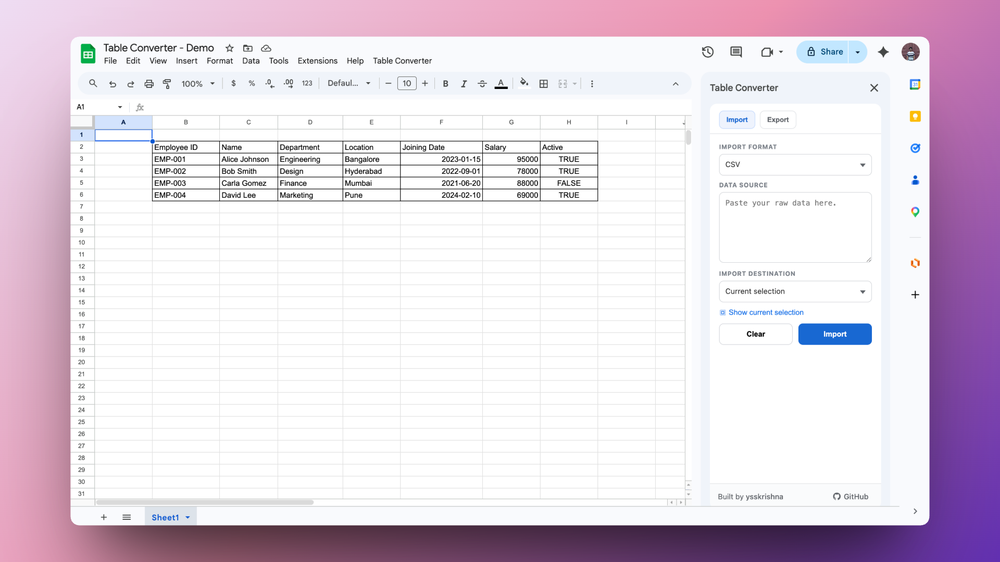
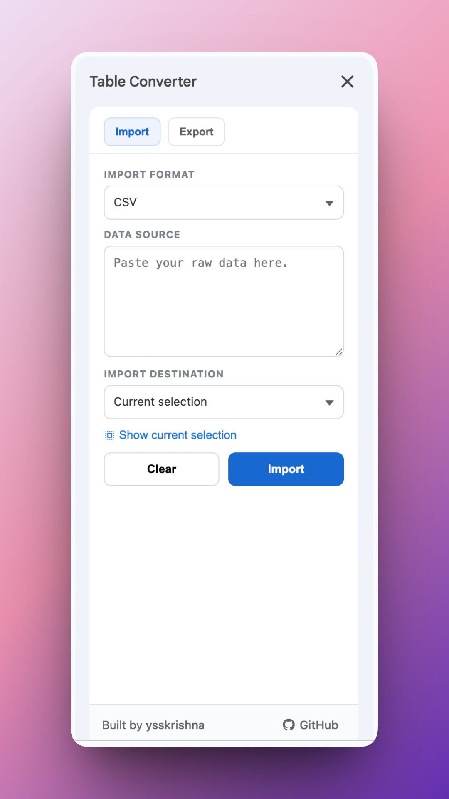
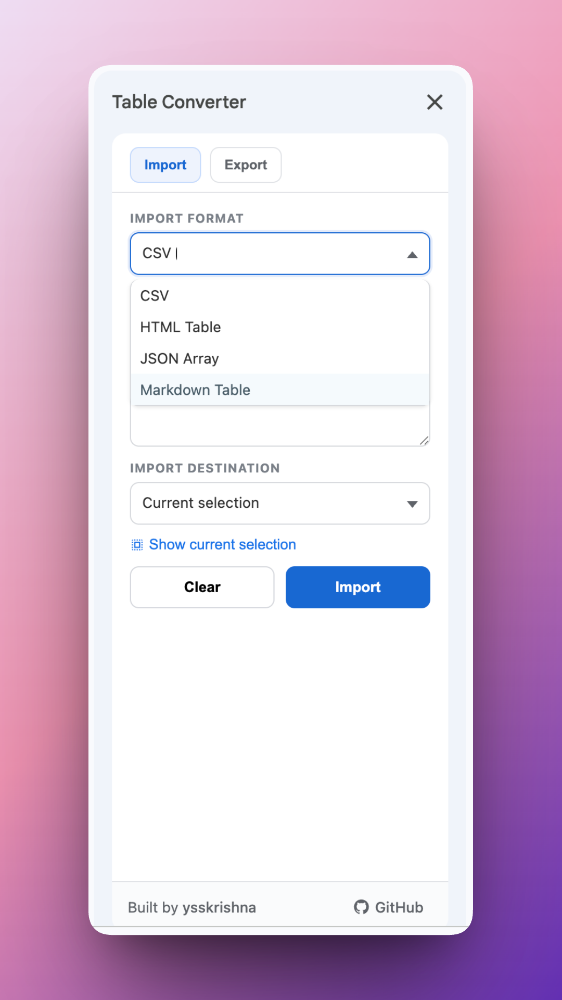
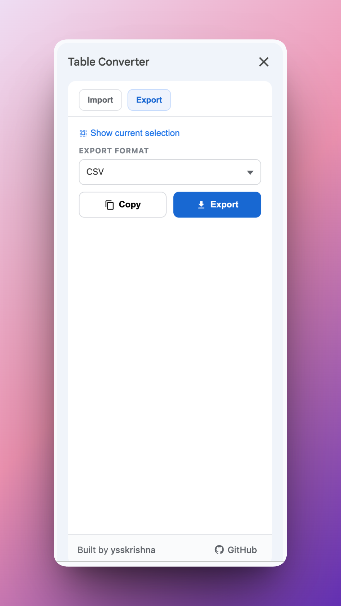

Google Sheets add-on for importing and exporting table data as CSV, HTML, Markdown, and JSON
Public pages for the Workspace add-on listing (terms, privacy, support).




Table Converter is built and maintained by Y. Siva Sai Krishna.
Author's GitHub • Author's LinkedIn